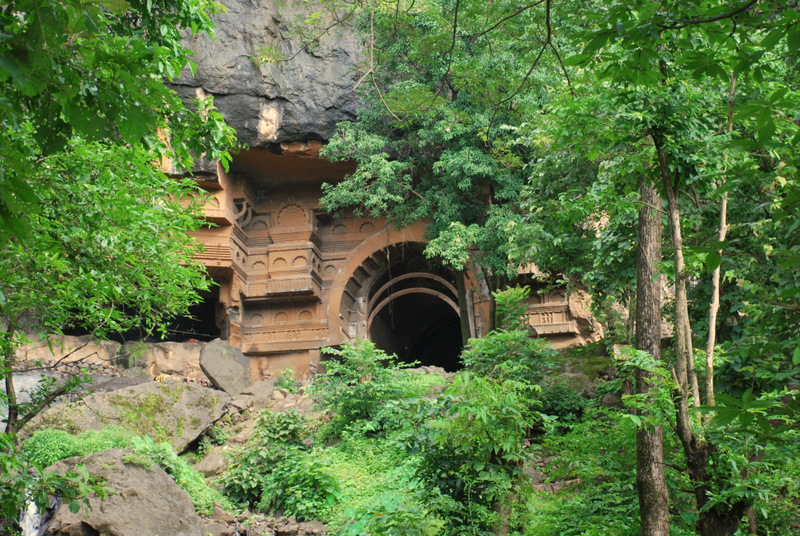
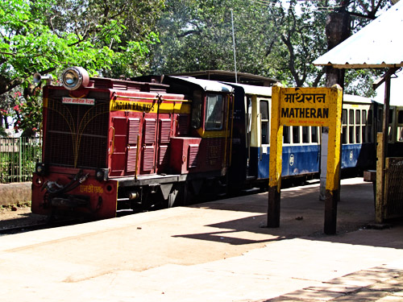
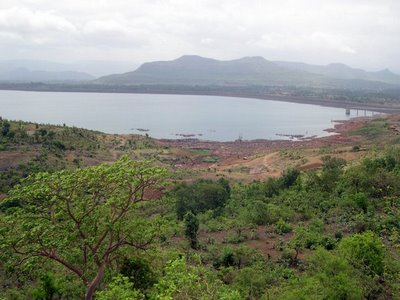
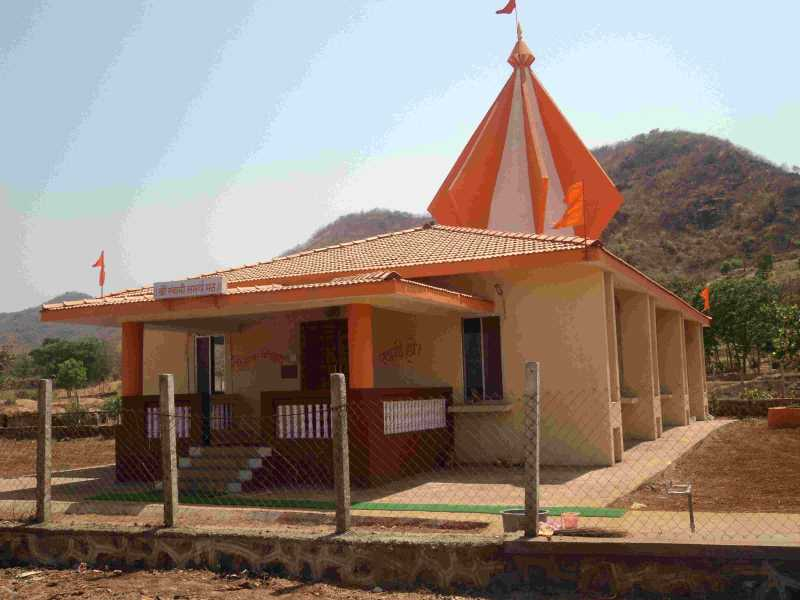

Welcome to Matheran Agro-Tourism Agri Tourism India (ATDC) gets the year 2008-2009 NATIONAL TOURISM AWARD as the Most Innovative and unique tourism Product…. National Tourism Awards are given by the Ministry of Tourism, Government of India to recognize the efforts by the Tourism Industry from across the India. The awards was given away by the hands of The Hon’ble Vice President of India in the function organized by Tourism Ministry at New Delhi on 3rd March 2010.
Public AwarenessPeople have become more interested in how their food is produced. They want to meet farmers and processors and talk with them about what goes into food production. For many people who visit farms, especially children, the visit marks the first time they see the source of their food, be it a dairy cow, an ear of corn growing in a field, or an apple they can pick right off a tree. Farmers and ranchers use this interest to develop traffic at their farm or ranch, and interest in the quality of their products, as well as awareness of their products.
THREE IMPORTANT FACTORS CONTRIBUTING TO THE SUCCESS OF AGRI-TOURISM |
Sites for Picnics near Neral....
1) Kadav famous Ganesh Temple just 10 km.2) Kondana Caves (Pandav Times) 15 km.3) Hill Station Matheran 8 km.4) Vaijanath Lord Shiva's Temple(ancient) 15 Km.5) Pali Bhutivali Water Dam just 5 Km.6) Lord SaiBaba Temple at Bhivapuri Rly.Stn. 3 Km.7) Many Waterfalls like Aashane, Koshane, Vangani within 15 Km. Diameter.8) Palasdhari Math(Khopoli) just 10 Km.9) PETH Fort(for tracking) near Matheran Hill Station.10) Pandav Times Vanvihar Caves at Kothimbe just 15 Km.11) Tata Power Company.12) Swami Samartha Math. Most Popular Kadav Ganesh Temple.

Kondhana Caves.

Hill Station Matheran.  Vaijanath Lord Shiva Temple.

Pali Bhutivali Water Dam.  Lord Saibaba Temple.  Waterfalls near Neral.  Palasdhari Math.  PETH Fort.  Pandav Times Vanvihar Caves(Kothimbe).  Tata Power Company.

Swami Samartha Math. |